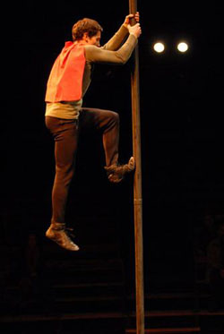

The chinese pole
David Gus will be presenting a show of chinese pole. This artist began at eight years old at the great Circus school of "Tartempion". This incredible show requires a lot of rigor and work.
The chinese pole is a more or less long bar or the artist does his prowess.

Description
- Name : David Gus
- Age : 28
- Country : England
- Price : Golden medal at the international festival of Monte-Carlo's Circus (2016)